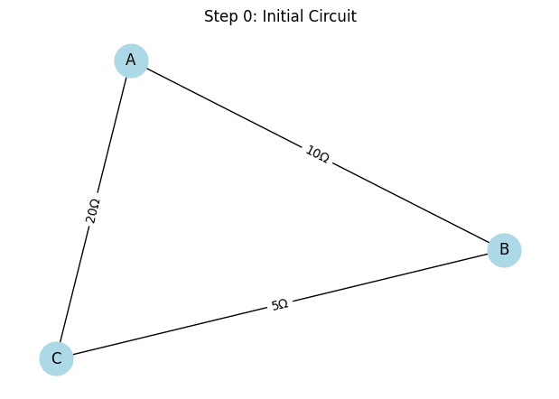
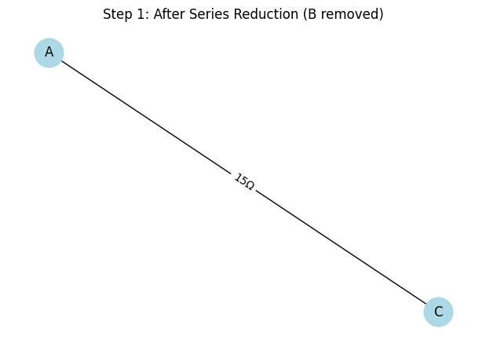
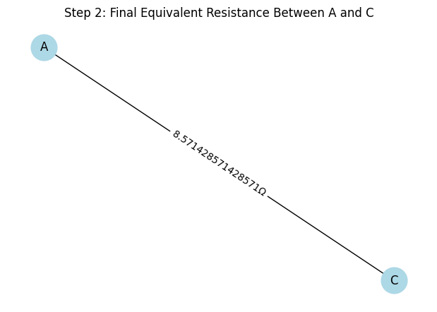

Problem 1: Equivalent Resistance Using Graph Theory
🧠 Motivation
In complex electrical circuits, manual simplification using series/parallel rules becomes inefficient. Graph theory provides an elegant, visual solution by treating:
- Nodes as junctions
- Edges as resistors (with weight = resistance in ohms)
This simulation shows how a circuit is reduced step-by-step using Python and networkx.
🔌 Define and Visualize Initial Circuit
def draw_circuit(G, title):
pos = nx.spring_layout(G, seed=42)
labels = nx.get_edge_attributes(G, 'resistance')
plt.figure(figsize=(6, 4))
nx.draw(G, pos, with_labels=True, node_color='lightblue', node_size=700)
nx.draw_networkx_edge_labels(G, pos, edge_labels={k: f"{v}Ω" for k, v in labels.items()})
plt.title(title)
plt.axis('off')
plt.tight_layout()
plt.show()
# Initial circuit: A–B (10Ω), B–C (5Ω), A–C (20Ω)
G = nx.Graph()
G.add_edge('A', 'B', resistance=10)
G.add_edge('B', 'C', resistance=5)
G.add_edge('A', 'C', resistance=20)
draw_circuit(G, "Step 0: Initial Circuit")

🔄 Step 1: Series Reduction (A–B–C)
- Node B is between A and C with degree 2 → series rule applies.
- Combine:
[ R_{AB} + R_{BC} = 10Ω + 5Ω = 15Ω ]
G.remove_node('B')
G.add_edge('A', 'C', resistance=15) # Now A–C has 15Ω and 20Ω in parallel
draw_circuit(G, "Step 1: After Series Reduction (B removed)")

♻️ Step 2: Parallel Reduction (A–C)
- Two edges between A–C: 15Ω and 20Ω
- Use formula:
[ \frac{1}{R_{eq}} = \frac{1}{15} + \frac{1}{20} = \frac{7}{60} → R_{eq} ≈ 8.57Ω ]
# Manually remove both and replace with equivalent
G.remove_edges_from(list(G.edges()))
G.add_edge('A', 'C', resistance=1 / (1/15 + 1/20))
draw_circuit(G, "Step 2: Final Equivalent Resistance Between A and C")

✅ Final Result
\[
\boxed{R_{eq} \approx 8.57\, \Omega}
\]
📈 Analysis Summary
- Step 0: Triangle network
- Step 1: Simplified using series rule
- Step 2: Final reduction with parallel rule
- Graphically tracked each step
❓ Frequently Asked Questions (FAQ)
💡 Can this work with bigger graphs?
Yes, but you'd need to add logic to automatically detect series/parallel structures and optionally use Δ–Y transformations.
💡 Why use networkx?
It simplifies circuit graph creation, traversal, and visualization.
💡 Can I use MultiGraph?
Yes, for actual parallel edges nx.MultiGraph() is better, but here we simulate it manually.
💡 Can I visualize more steps?
Absolutely. Each reduction step can be visualized with draw_circuit() after each transformation.